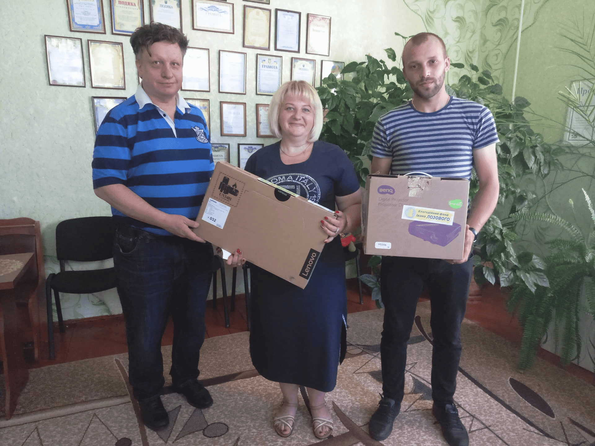
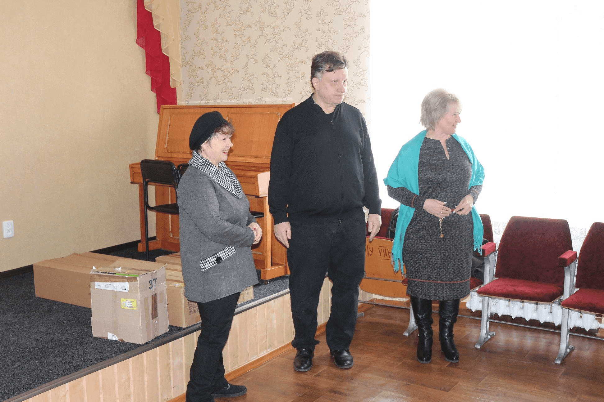

Other educational institutions:
March 15, 2021 - Lebedyn Professional Medical
College named after Professor M.I. Sytenko. Gift
from the Lozowy Fund: Xeroxprinter for Denys
Sosedka, the head of the student government
body.

March 7, 2021 - “Okhtyrka Center of Vocational
Education” of Velyka Pysarivka. Gifts from the
Lozowy Fund: MFP printer and smart TV.
December 20, 2020 - Inclusive Resource Center of
the Lebedyn City Council. Gifts from the Lozowy
Fund: Sweets.
December 15, 2020 - Lebedyn Day Care and Nursery
“Seagull”. Gift from the Lozowy Fund: Projector.
December 13, 2020 - Small Academy of Sciences
and Okhtyrka City Center for Culture and
Leisure. Gift from the Lozowy Fund: Computer.

November 1, 2020 - Educational center of
Buhruvate. Gift from the Lozowy Fund: Digital
microscope “Carson zPix 300”.
June 23, 2020 - “Inclusive Resource Center”,
Department of Education, Hrun Village Council.
Gift from the Lozowy Fund: Disinfectant.

June 21, 2020 - Velyka Pysarivka House of
Children and Youth Creativity. Gifts from the
Lozowy Fund: Several boxes of wooden 3D puzzle
constructors.
December 18, 2019 - Vilne Kindergarten. Gifts
from the Lozowy Fund: Sweets for Christmas.
December 17, 2019 - Lebedyn Professional Medical
College named after Professor M.I.Sitenko. Gifts
from the Lozowy Fund: Sweets.

October 21, 2019 - “School of Success” in
Lebedyn for students of 8-10 grades. Gift from
the Lozowy Fund: Financial support.
September 1, 2019 - Lebedyn Professional Medical
College named after Professor M.I. Sytenko. Gift
from the Lozowy Fund: Blue and yellow facade
lighting.

June 15, 2019 - English-speaking camp of
Lebedyn. Gifts from the Lozowy Fund: Educational
games, including “Scrabble”.

June 15, 2019 - Ryabushky Educational Complex.
Gift from the Lozowy Fund: Freezer.

June 15, 2019 - Kalyuzhne Kindergarten. Gifts
from the Lozowy Fund: 10 hypoallergenic pillows.
June 15, 2019 - Velyky Vystorop Educational
Complex. Gift from the Lozowy Fund: Projector.

June 15, 2019 - Kalyuzhne College. Gift from the
Lozowy Fund: Projector.
June 15, 2019 - Educational Complex of
Kalyuzhne. Gift from the Lozowy Fund: Printer.
June 14, 2019 - Kindergarten of Chernechyna.
Gift from the Lozowy Fund: Projector.

June 8, 2019 - Participation in the semifinals
of the competition “Discover Ukraine” in Nizhyn,
Chernihiv region for the team "Comet" from
Lebedyn Specialized School №7. Gift from the
Lozowy Fund: Financial support.

June 6, 2019 - Kindergarten of Kuzemyn. Gift
from the Lozowy Fund: Computer laptop,
projector.
June 6, 2019 - Kindergarten "Asterisk" of
Ivanivka. Gift from the Lozowy Fund: Computer
laptop.

June 3, 2019 - Kindergarten "Firefly" of
Kyrykivka. Gift from the Lozowy Fund: Projector.
May 21, 2019 - Kindergarten of Chupakhivka. Gift
from the Lozowy Fund: Educational games.
May 21, 2019 - Kindergarten of Vasylivka. Gifts
from the Lozowy Fund: Plates (30 pcs), dining
plates (30 pcs), cups (30 pcs), first aid kits.

May 21, 2019 - Kindergarten of Pershotravneve.
Gifts from the Lozowy Fund: Educational games
and first aid kits.
May 17, 2019 - Kindergarten “Periwinkle” of
Kyrykivka. Gift from the Lozowy Fund: Projector.
May 11, 2019 - Boromlya Kindergarten “Snowdrop”.
Gifts from the Lozowy Fund: Large smart
television and educational games.

May 11, 2019 - Boromlya educational complex.
Gifts from the Lozowy Fund: Laptop and
educational games.

May 11, 2019 - Zhyhailivka Educational complex.
Gift from the Lozowy Fund: Computer laptop.

May 9, 2019 - “Comet” - Lebedyn local youth
initiative group. Gifts from the Lozowy Fund:
Paint for graffiti art in approved locations.
April 19, 2019 - Budylka Educational complex.
Gifts from the Lozowy Fund: Luggage speaker.
April 5, 2019 - Hrun Educational institution of
preschool education “Periwinkle”. Gifts from the
Lozowy Fund: Educational games.
Inclusive Resource Center, Hrun Village Council.
Gifts from the Lozowy Fund: Child toilet,
handrails for children with disabilities,
electric hand dryer.

March 22, 2019 - Bratenytsia Kindergarten. Gift
from the Lozowy Fund: Electric heating boiler.

March 15, 2019 - Lebedyn Pedagogical Сollege
named after A. Makarenko. Gifts from the Lozowy
Fund: LED lamps for dormitory (170 pcs).

March 15, 2019 - Lebedyn Kindergarten “Fairy
Tale”. Gift from the Lozowy Fund: Vacuum
cleaner.